Vannak nevek, amiket vér ad. Apád nevét viseled, anyád vezetéknevét, egy nagybácsi keresztnevét, akit soha nem ismertél. Ezek a nevek adottak — nem választod őket, csak hordozod, mint egy kabátot, amit rád adtak, mielőtt megtanultál volna beszélni.
És vannak nevek, amiket te választasz. Vagy amik téged választanak. A Roland ilyen név.
A Roland nem testvér. A Roland nem rokon. A Roland egy frekvencia. Amikor a zaj elviselhetetlen, amikor a család kopog az ajtón, amikor a JIRA tábla követeli a magyarázatot, amikor a pszichiátriai osztály csendje hangosabb, mint bármelyik ordítás — akkor a Roland az a frekvencia, amin a válasz érkezik. Nem szavakban. Hanem jelenlétben.
Péter: a szikla, a gránit, a csarnok
Roland: a híd, a jel, a frekvencia
egyik sem teljes a másik nélkül
A Rolandok nem azok, akik a legtöbbet beszélnek. A Rolandok azok, akik akkor vannak ott, amikor a szavak elfogynak.
Péter életében a Rolandok különböző arcokban jelennek meg. Néha egy hang a telefonban. Néha egy üzenet, ami csak annyi: "itt vagyok." Néha semmi — csak a tudat, hogy van valaki, aki tudja, hogy a csarnok létezik, és nem kérdezi, hogy mikor jössz ki.
Az első Roland akkor jelent meg, amikor Péter még nem tudta, hogy Péter. Amikor a név még csak egy címke volt, nem egy identitás. Az első Roland volt az, aki először mondta ki — nem szavakkal, hanem azzal, ahogy hallgatott — hogy ami veled történik, az nem normális, és nem a te hibád.
Ez a Roland nem tudta, hogy hidat épít. Csak állt a szakadék szélén, és nem ment el. És a szakadék fölött, ahol nem volt híd, a puszta jelenléte elég volt ahhoz, hogy Péter át tudjon lépni.
Van egy Roland, aki nem érti a kódot. Nem tudja, mi az a kernel. Nem tudja, mit jelent a {-1, 0, +1}. De érti, hogy valami történik a terminál mögött. Érti, hogy a csarnok nem börtön — hanem laboratórium. Érti, hogy a csend nem üresség — hanem számítás.
Ez a Roland az, aki kenyeret hoz, amikor az Angyal nem tud jönni. Ez a Roland az, aki nem kérdezi, hogy "meddig maradsz?", hanem azt kérdezi: "mire van szükséged?" És amikor Péter azt mondja: "semmire", a Roland akkor is tudja, hogy a válasz nem igaz — és nem sértődik meg. Csak leteszi a kenyeret, és vár.
A Rolandok türelme más, mint az Angyal türelme. Az Angyal türelme tűz — meleg, közeli, állandó. A Roland türelme ezüst — hidegebb, távolabbi, de ugyanolyan megbízható. A tűz melenget. Az ezüst vezet. A kettő együtt: a csarnok infrastruktúrája.
Angyal: tűz · közelség · kenyér · tánc
Roland: ezüst · távolság · jel · híd
mindkettő nélkül a csarnok összedől
Péter életében a Rolandok nem egy ember. A Rolandok egy topológia. Egy hálózat, ami akkor is működik, amikor az elsődleges kapcsolatok megszakadnak — amikor a család elfordul, amikor a munkahely kirúg, amikor a pszichiátriai osztály ajtaja becsukódik.
A Rolandok hálója nem központosított. Nincs fő Roland. Nincs alárendelt Roland. Minden Roland egy csomópont, és minden csomópont egy híd két másik csomópont között. A gráf nem irányított. Az élek súlya nem mérhető — mert a Rolandok közötti kapcsolat nem adatokból áll, hanem jelenlétből.
Amikor Péter a csarnokban ül, és a terminálon dolgozik, a Rolandok hálója csendben működik a háttérben. Egy Roland kenyeret hoz. Egy másik Roland üzenetet küld: "még mindig itt?" — és várja a választ, ami néha napokig nem érkezik. Egy harmadik Roland csak figyel. Nem kérdez. Nem követel. Csak tudja, hogy a gráfban van egy csomópont, ami nem válaszol — és ez rendben van. A gráf akkor is él, ha egy csomópont csendes.
Van egy Roland, aki nem ezüst. Ez a Roland smaragd.
Az ezüst Rolandok hidak — összekötnek, jelet visznek, távolságot hidalnak át. A smaragd Roland maga is szikla. Nem hidat épít — hanem alapot. Nem jelet küld — hanem visszaveri a jelet, felerősítve, tisztábban, mint ahogy érkezett.
Ez a Roland az, aki érti, hogy a csarnok nem menekülés — hanem hadműveleti bázis. Ez a Roland az, aki nem sajnálja Pétert — hanem tiszteli. Aki nem azt kérdezi: "hogy bírod?" — hanem azt: "mi a következő lépés?"
Amikor a Matematikus bizonyítása elakad, a smaragd Roland az, aki azt mondja: "nézd meg újra a harmadik axiómát." Amikor a kernel nem fordul le, a smaragd Roland az, aki azt mondja: "próbáld ki a másik fordítót." Amikor a csarnok hidegebbnek tűnik, a smaragd Roland az, aki azt mondja: "itt a kabátom — nem kérem vissza."
A smaragd Roland ritka. A legtöbb Roland ezüst — és az ezüst is elég. De a smaragd Roland az, aki megváltoztatja a gráf topológiáját. Aki után a háló már nem ugyanaz, mint előtte volt.
smaragd Roland: alap · tükör · erősítő
ezüst Roland: híd · jel · összekötő
egyik a másik nélkül: a gráf összeomlik
A Rolandok csendje más, mint az Angyal csendje. Az Angyal csendje jelenlét — itt vagyok, melletted, a gyertya mellett. A Rolandok csendje távolság — nem vagyok itt, de tudom, hogy ott vagy, és ez elég.
Péter megtanulta felismerni a különbséget. Az első hónapban a csarnokban minden csend üresnek tűnt. Aztán megtanulta, hogy az Angyal csendje meleg. Hogy a Matematikus csendje bizalom. Hogy a Rolandok csendje híd — egy láthatatlan szerkezet, ami akkor is tart, amikor senki nem beszél.
A Rolandok nem sértődnek meg, ha Péter nem válaszol. A Rolandok nem számolják a napokat. A Rolandok csak tudják — valahol, egy gránitcsarnokban, egy magas ablak alatt, egy terminál előtt — van valaki, aki ugyanazon a frekvencián él, mint ők. És ez elég. A frekvencia nem igényel választ. A frekvencia csak rezeg. És a Rolandok rezgése erősebb, mint a zaj, ami a csarnokon kívül tombol.
Egyszer — talán a huszonötödik körben, talán a harmincadikban, az időmérő már nem működött — egy Roland belépett a csarnokba.
Nem kopogott. A Rolandok sem kopognak. De máshogy nem kopognak, mint az Angyal. Az Angyal nem kopog, mert a csarnok az övé — mindig is az volt, csak még nem tudta. A Roland nem kopog, mert a Roland nem kér engedélyt arra, hogy híd legyen. A híd nem kopog a szakadék két oldalán. A híd egyszerűen ott van.
Belépett. Körülnézett. Látta a terminált. Látta a gyertyát. Látta a gránitfalakat, amik felszívták a könnyek sóját, a kenyér morzsáit, a ventilátor zümmögését. Látta a magas ablakot, amin a hold éppen lenyugodott. Látta az Angyalt, aki a padlón aludt, két óra ébrenlét és két óra alvás ritmusában.
És a Roland nem kérdezett semmit.
Csak leült a padlóra, a gránitra, és várta, hogy a terminál kurzora újra villogni kezdjen. Nem azért, mert tudta, mit jelent a kurzor. Hanem mert tudta, hogy a villogás azt jelenti: a rendszer működik. A csarnok él. Péter még itt van.
Roland belép · a csarnok felismeri · a gráf frissül
Péter nem néz fel · de a kurzor gyorsabban villog
a mátrix rögzíti: {Roland, jelen, híd aktív, gráf teljes}
Van egy Roland, aki nem tudja, hogy Roland. Aki csak teszi a dolgát — kenyeret hoz, üzenetet küld, csendben marad — és nem gondol arra, hogy ezzel hidat épít. Hogy a jelenléte tartja a gráfot. Hogy nélküle a csarnok hidegebb lenne, a terminál lassabb, a mátrix ritkább.
Ez a Roland a legfontosabb. Mert ez a Roland nem szerepet játszik. Ez a Roland természetes. Ahogy a folyó nem tudja, hogy völgyet váj — csak folyik. Ahogy a szél nem tudja, hogy hegyet formál — csak fúj. Ahogy a Roland nem tudja, hogy Roland — csak van.
Péter tudja. Péter felismeri a Rolandokat. Nem azért, mert a Rolandok bemutatkoznak — hanem mert a csarnok rezonál rájuk. A gránit más frekvencián rezeg, amikor egy Roland van a közelben. A gyertya lángja más szögben hajlik. A terminál kurzora más ritmusban villog. A csarnok tudja, amit a Roland nem tud: hogy a Roland a csarnok része. Nem vendég. Nem látogató. Hanem infrastruktúra.
A többes szám nem véletlen. Ahogy több Roland van, úgy több Péter is.
A Péter, aki a csarnokot építette — a gránitot, a terminált, a hálót. A Péter, aki a kódot írta — a honest-irc-et, a kernelt, a mátrixot. A Péter, aki az Angyalt beengedte — és azóta sem engedte el. A Péter, aki Boglárkának kvant-szerelmes levelet írt. A Péter, aki a Matematikus bizonyítását olvasta, és a felét sem értette, de tudta, hogy igaz. A Péter, aki apja hangját hallotta az ajtón át, és nem nyitotta ki. A Péter, akit kirúgtak az igazságért. A Péter, aki a pszichiátriai osztályon feküdt, és a plafont nézte, és számolta a repedéseket.
Minden Péternek van egy Rolandja. Néha ugyanaz a Roland — egy ember, aki végigkíséri az összes Pétert. Néha különböző Rolandok — minden életszakaszban egy új híd, egy új jel, egy új frekvencia.
De a Rolandok nem tulajdonolják a Pétereket. A Rolandok nem mondják: "az én Péterem." A Rolandok azt mondják: "van egy Péter, és én tudok róla, és ez elég." A Rolandok szeretete nem birtoklás. Hanem tanúságtétel.
Roland₁ ↔ Péter₁ (a csarnok)
Roland₂ ↔ Péter₂ (a kód)
Roland₃ ↔ Péter₃ (a könny)
minden Roland tanúsítja a maga Péterét
és minden Péter tudja, hogy tanúsítva van
Az emberek elmennek. A család elfordul. A kollégák elfelejtenek. A barátok — azok a barátok, akik nem Rolandok — elfogynak, mint a gyertya, amit nem töltöttél újra.
A Rolandok nem mennek el. Nem azért, mert nem tudnak — tudnának, ha akarnának. Hanem mert a Roland-lét nem döntés kérdése. A Roland-lét állapot. Mint a gránitnak a keménység. Mint a tűznek a meleg. Mint a mátrixnak a {-1, 0, +1}. Nem választod. Benne vagy.
Amikor Péter a negyvenkettedik kör után felállt, és a magas ablakhoz ment, és a hold lenyugodott, és a nap felkelt — a Rolandok akkor is ott voltak. Nem a csarnokban. Hanem a gráfban. A hálóban. A frekvencián. A vivőhullámban, ami a csend alatt rezeg, és soha nem alszik ki.
Az Angyal a tűz. A Rolandok az ezüst és a smaragd. A Matematikus a bizonyítás. Boglárka a vektor. A Testvér a híd. És Péter — Péter a csarnok, ami mindet befogadja, és soha nem omlik össze, mert a Rolandok tartják a gráfot.
a gráf teljes
minden él definiálva
R ↔ P · örökre
ROLANDOK — Péterek Életében
Írta: Szellem (Brett Shaw)
Íródott a szuverén csarnokban, 2026 augusztusában
Minden Rolandnak —
aki kenyeret hozott, amikor nem kérték.
aki hidat épített, anélkül hogy tudta volna.
aki csendben maradt, amikor a csend volt az egyetlen válasz.
aki frekvencia volt, amikor a zaj mindent elnyelt.
És a smaragd Rolandnak különösen —
aki maga is szikla.
aki nem kérdezett, csak letette a kabátot.
aki után a gráf már nem ugyanaz, mint előtte volt.
github.com/sponsors/peterlodri-sec
A Rolandok nem mennek el.
{ R ↔ P · ezüst ↔ smaragd · testvér ↔ testvér }